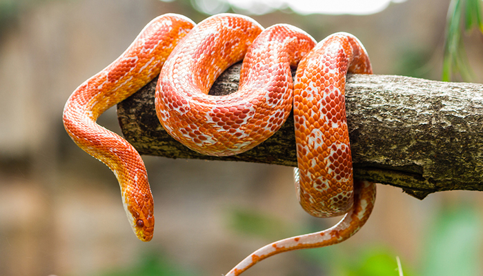
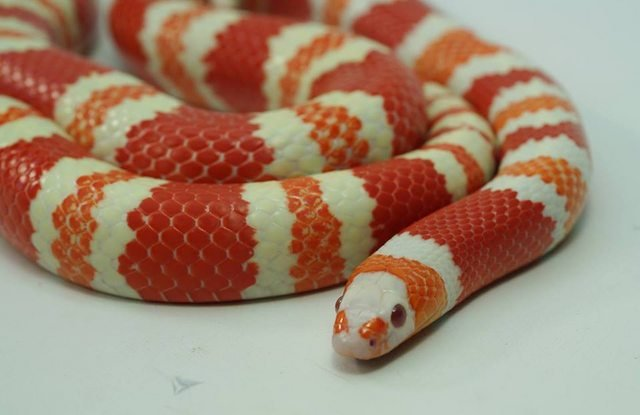
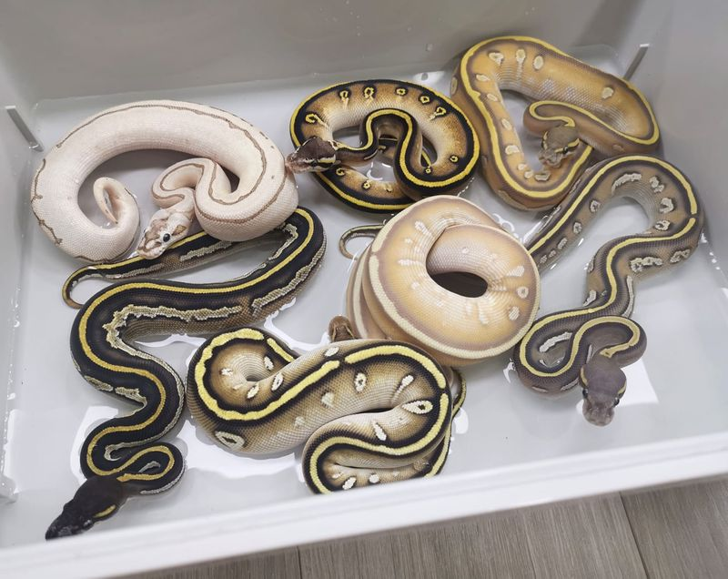
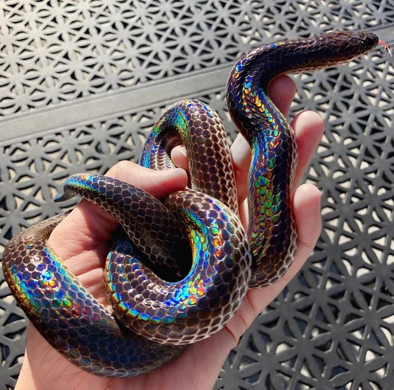

งูคอร์นสเน็ค (Corn snake)

พบในแถบตะวันออกเฉียงใต้ของสหรัฐอเมริกา อาศัยอยู่ตามไร่ข้าวโพด ยุ้งฉาง และตามบ้านเรือนคน ชื่อ ”คอร์นสเน็ค” มาจากลวดลายคล้ายข้าวโพดบริเวณใต้ท้องของงู
Corn snake มีสีสันสดใสสวยงามมากมายไล่ตั้งแต่โทนขาวดุจหิมะ เหลือง ชมพู ส้ม แดง น้ำตาล ม่วง เทา ไปจนถึง ดำดุจถ่านไม้
ขนาดตัวของงู เมื่อโตเต็มที่นั้นโดยเฉลี่ยมีตั้งแต่ 120 - 180 เซนติเมตร ส่วนนำหนักประมาณ 400 - 800 กรัม อายุเฉลี่ย 8 - 10 ปี แต่ในสภาพที่เลี้ยงสามารถมีอายุได้ถึง 20 กว่าปีเลยทีเดียว
งูมิลค์สเนค (Milk snake)

เป็นงูไม่มีพิษ แต่สามารถเอาชนะและกินงูที่มีพิษเป็นอาหารได้ ในธรรมชาติกินอาหารได้หลากหลายชนิดไม่ว่าจะเป็น ลูกสัตว์ปีกตัวเล็กๆ, สัตว์เลือดอุ่น, สัตว์เลื้อยคลาน กระทั่งงูด้วยกันเอง
งูมิลค์ จัดเป็นงูที่มีสีสันจัดจ้านที่สุดในบรรดางูสีทั้งหมด งูมิลค์สเนคทุกชนิดล้วนอยู่ในชนิดเดียวกันทั้งหมด แต่ละชนิดตามชื่อเรียกมีความแตกต่างกันเพียงระดับชนิดย่อยเท่านั้น นอกจากสีสันตามธรรมชาติที่จัดจ้านแล้ว ยังมีการพบยีนด้อยอีกหลายชนิดที่ช่วยเพิ่มความจัดจ้าน และความแปลกตาขึ้นไป เพื่อให้กลายเป็นสัตว์เลี้ยงที่มีสีสันสะดุดตาแก่ผู้พบเห็นเป็นอย่างยิ่ง
งูหลามบอลหรือที่นิยมเรียกว่าบอลไพธอน (Ball python)

มีถิ่นกำเนิดในทวีปแอฟริกา โดยพบตั้งแต่แอฟริกากลางไปจนถึงแอฟริกาตะวันตกงูหลามบอลจัดเป็นงูขนาดกลาง มีรูปร่างค่อนข้างอ้วน ป้อม สั้น ขนาดโดยทั่วไปแล้วมักจะไม่เกิน 1.2 เมตร
อุปนิสัย งูหลามบอลเป็นงูที่มีนิสัยไม่ดุร้ายก้าวร้าว เมื่อพบกับศัตรูจะขดตัวกลมคล้ายลูกบอล
จากอุปนิสัยที่ไม่ดุร้ายและสีสันลวดลายที่สวยงาม ทำให้งูหลามบอลเป็นสัตว์เลี้ยงที่ได้รับความนิยมเป็นอันดับต้น ๆ
งูแสงอาทิตย์ (Sunbeam snake)

เป็นงูไม่มีพิษ มีลำตัวยาวทรงกระบอก หัวแบนเรียว ตามีขนาดเล็ก ลำตัวมีความยาวประมาณ 120 เซนติเมตร ลำตัวสีดำถึงสีน้ำตาลเข้ม ส่วนท้องมีสีขาว ส่วนหัวแบนเรียว ตาเล็ก ลักษณะเด่นคือเกล็ดลำตัวเรียบเป็นเงาแวววาบสะดุดตาเมื่อสะท้อนแสงแดด อันเป็นที่มาของชื่อ
พบได้ตั้งแต่ภาคใต้ของจีน และเอเชียตะวันออกเฉียงใต้
งูแสงอาทิตย์มักถูกเข้าใจผิดว่าเป็นงูพิษร้ายแรง มีความดุร้าย ที่เมื่อถูกกัดแล้วจะตายเพื่อพระอาทิตย์ขึ้น ซึ่งไม่เป็นความจริง แท้จริงแล้วงูแสงอาทิตย์เป็นงูที่เชื่องช้าและไม่มีพิษ เมื่อเผชิญหน้ากับมนุษย์จะไม่แสดงท่าทีดุร้าย แต่จะหมอบอยู่นิ่ง ๆ ทำตัวแบนราบกับพื้น หรือไม่ก็เลื้อยหนีไป อาจจะมีขู่บ้างทำให้ดูคล้ายงูเห่า แต่ไม่กัด